Issue #107 - September/October 1987
Bring new pleasures and superior plants to your garden. and superior plants to your garden.
Today, filling out the seed order is a happy duty for the wintered-in gardener. Even so, I never fail to keep and use seeds from certain crops of my own.
Why? First, for quality. There are seeds money can't buy. Good ones. One of my favorite tomatoes, for example, is an extra-meaty Italian variety obtained from a friend, for which I could never buy seed if I let the strain run out.
A home gardener can also create superior cultivars in a back-yard plot. Want bigger fruits or more productive plants? Save seeds from outstanding parents. Want to develop locally adapted strains that will perform better in your particular microclimate? Propagate the seed from your hardiest, most frost-resistant plants.
Second, for fun. Gardeners who enjoy experimenting will find a world of challenge and satisfaction in trying different seed-saving and plant-crossing techniques, in watching subtle changes in the varieties they save and in keeping an eye out for unusually good new developments. It was an observant elderly gardener out for a walk who propagated the now popular Henderson Bush Lima - after discovering a volunteer specimen growing by the road.
Third, for preservation. When a certain old food-plant variety dies out, we've lost a part of the gene pool from which we might have retrieved valuable traits for breeding into new generations. Some hardy varieties of tomatoes, for instance, have been developed by introducing genes from small-fruited, seemingly worthless wild strains that carried genes for hardiness.
Then, too, if you prefer to plant untreated seed, or would like to increase your gardening independence or simply save money, seed saving should be high on your list of skills to learn. And it's not difficult to do. After all, generations of people who had no choice but to be self-reliant managed to keep seeds going with fewer resources and less understanding of the process than we have.
A Bit of Botany
What kinds of seeds should you collect? Eliminate hybrid plants right off the bat. Hybrids are created from two different parents in a special selective (and often intricately mechanical) process unlikely to be duplicated in natural random fertilization. Plants grown from the seeds they produce will not duplicate the good qualities of the original specimens and may, in fact, be greatly inferior. Except for some frankly experimental ventures, seed savers work with open-pollinated (also called standard) varieties. These can be bred true to form by naturally occurring pollination.
Hang on here for a bit of elementary botany that will make the whole seed-forming process easier to understand. Flowers exist to produce seed. The flower's pollen-bearing, fertilizing (male) organ is the stamen, which consists of the stalk (or filament) and anthers, the pollen-bearing sacs on the tip of each stalk (Fig. 1).
The seed-nurturing, receptive (female) parts of the flower, called carpels, are composed of the ovary, the eggbearing capsule, the style, the tube leading up from the ovary and the stigma, the pollen-receptive tip. When a grain of pollen lands on a receptive stigma, the grain extends a living thread through the style to the ovary. This unites with a ripe ovule, or egg, forming a single living cell-which then begins the multiple divisions that start it on the journey to becoming a tiny but marvelously intricate seed embryo.
Not all flowers contain both male and female parts. Those that do are called perfect flowers. Plants with separate male and female flowers may be either monoecious (the separate blooms occur on the same plant) or dioecious (each plant bears either male or female blooms).
Some perfect blossoms are self-pollinating. They accept their own pollen without any help from wind or insects. (Some self-pollinate before their flowers even open). These are the easiest kinds of plants from which to save seed, because you don't have to isolate them to prevent them from accepting pollen from other, different, varieties.
Some common self pollinators are tomatoes, lettuce, peas, snap beans, soybeans, lima beans, endive and escarole. Barley, wheat, oats and cowpeas also self-pollinate. Peppers do, too, but they will cross when insects bring in pollen from other kinds of peppers. (If you want to get technical, all self-pollinators can cross with other varieties of the same vegetable in from 0.1% to as much as 5% of the plant populations, but for ordinary back-yard seed saving you don't need to isolate them. I've saved tomato and lettuce seeds for 15 years, and the plants have always come true.)
Fig. 3 Broccoli flowers
A large group of cross-pollinated plants depend on insects to transfer the pollen (Fig. 3). These include asparagus, cole crops (broccoli, Brussels sprouts, cabbage, collards, kale and kohlrabi), carrots, celery, cucumbers, eggplant, melons, onions, parsley, parsnips, pumpkins, radishes, rutabagas, squash and turnips.
Don't worry about your cabbage crossing with your carrots; plants will cross only within their own species. The tales you might have heard about weird "watercumbers" or "cantagourds" are myths. It is true, though, that some kinds of pumpkins, gourds and squash can cross-often resulting in tough (but edible) fruit. More about this later.
To prevent unwanted cross-pollination of those crops that do cross readily, you can either keep blossoming plants at recommended safe distances from each other (isolation in space) or plan your plantings so the different crops don't bloom concurrently (isolation in time). You could, for example, keep seed from both an early and a late corn, because the two plantings would tassel at different times. A third way to control pollination (Fig. 4) is to cage blossoming flowers in fine wire or netting to keep out unwanted influences. (You'd need to do the pollinating yourself or put a piece of maggot-infested meat inside to produce flies for pollinating.) An often-easier alternative is to bag and hand-pollinate individual flowers.
With most cross-pollinated crops, you should save some seed from five or more individual plants (even if you only need a small amount of seed). If you repeatedly keep the offspring of only one plant, over time the inbred seed will most likely run down, i.e., lose vigor and become more susceptible to disease or other problems. Self-pollinators don't lose vigor from their natural inbreeding, so you can safely save only one plant's (or a single fruit's) seed from them if you wish.
Another breeder's technique you can adopt is roguing, culling weaker plants before they can afect the seed you want to save. You need to rogue plots of cross-breeding plants before they flower, to prevent them from possibly pollinating the ones whose seed you want to keep.
In your first season as a seed saver, you'd probably be wise to work with only a few crops. Be sure to choose your parent plants carefully, selecting seed only from superior examples. What should you look for? Whatever's important to you. If you'd like early tomatoes, save seed from the first fruit that ripened. If it's size you're after, save seed from the plant that produced the most large fruit. And consider the plant as a whole in addition to individual qualities.
Be sure to mark your parent plants with stakes, bright labels or wild-colored cloth strips (Fig. 5). This is especially important if more than one family member is likely to be picking vegetables. It's no fun to find that your earliest-ever pea pods just disappeared into the soup pot.
The Easiest Seed-Saving Crops
Beans. Snap bean blossoms self-pollinate before they open, so there's very little chance they'll cross-pollinate. (If you have a rare old heirloom strain that you want to be sure of keeping pure, plant it 100 feet away from any other blossoming beans.) Bean seed matures about six weeks after the pods are good for eating - when it's ripe, you can scarcely dent it with your teeth. Leave the pods alone until the plants are dry, often leafless, stalks rattling in the wind. Then pull the stalks and stack them in a protected, airy place to dry for another week or two.
You can shell small amounts of beans by hand. Thresh larger collections by spreading the pods on a clean sheet and whacking them with a rubber hose, broom or flail (Fig. 6). By the way, if your seeds ripen slowly and unevenly, your soil may be short on zinc.
Lima beans, dry beans and soybeans should be treated like snaps. Bumblebees like lima flowers, so the plants are likely to cross-pollinate with other limas. But they won't cross with snaps, peas, soybeans or other related legumes.
Eggplant. This crop self-pollinates but it may also be cross-pollinated by row-hopping insects. If you intend to save seed from more than one variety, grow them at opposite ends of the garden. Leave the fruit on the plant until it has lost its glossy sheen and firmness - well past the point when you'd want to eat it. Eggplant seeds can be scraped and rinsed free of pulp without much difficulty.
Escarole and endive. Spring plantings of these biennials may perform like annuals and go to seed in summer heat. However, the leaf quality is best in fall crops. Keep autumn starts alive till spring by covering them with a deep mulch (applied when crowns are dry) or a portable cold frame. Each small seed fleck has a wispy parachute which you can rub off if you wish when you package the dry seeds.
Lettuce. This self-pollinator goes to seed once the weather turns warm. First the heads elongate. Leaves turn coarse, dull and bitter, as though to protect the reproducing plant from being eaten. Then a seedstalk emerges from the leaf crown and soon bears clusters of small yellow flowers. After two or three weeks, when the blossoms change to tufts of fluff, pull off the down with its attached seeds. One stalk on a large lettuce plant can produce up to 30,000 seeds. (One of the most useful traits for which you can select is late bolting, so always save seed from the last lettuce to go to seed.)
Okra. This usually self-pollinates but will sometimes cross. Let okra pods dry on the plant, but catch them before they shatter (dry and fall), then shell the rounded seeds and let them air-dry for another week or two before packaging. Select for early- and heavy-bearing plants.
Peas. In the tangle of the viny pea row it's hard, if not impossible, to distinguish between separate plants. For this reason, most seed keepers designate a stretch of row for seed production and let all the pods in that section mature. You can expect about one pound of seed from each 15 feet of row. Pods should dry thoroughly before harvest, and even then it's a good idea to pile the pulled vines loosely in a dry, well-ventilated spot to air-dry further before threshing. Regular peas will only rarely cross with sugar peas, and this isn't common enough to concern the home gardener.
Peppers. Even though peppers normally self-pollinate, it's not at all unusual for insects to carry pollen from hotpepper blossoms to those of sweet ones. So keep your pepper varieties 50 feet apart. Aside from the crosspollination possibility, peppers are a snap to save. I just shake or scrape out the seeds from several shapely fruits that have turned red-ripe, and then dry them on newspapers for a week before packaging.
Sunflowers. These cooperative seed producers are a good choice for your first season of seed keeping. You might want to tie netting over the ripening heads to keep birds off (Fig. 7): On our farm, goldfinches can strip the heads in no time. Shell the heads by rubbing them over a coarse hardware-cloth screen. Then dry the seeds, and seal them securely to keep out mice.
Sunflowers that cross repeatedly with nearby wild sunflowers will produce less-desirable plants with each generation. It's usually easy, though, to find and chop down any nearby small-seeded wild plants that might interfere.
Tomatoes. Because tomatoes are the most popular garden vegetable and are available in many wonderful open-pollinated varieties, you'll probably want to save some. I simply scoop out the seeds from several top-quality, overripe fruits, removing as little pulp as possible, and spread them on several thicknesses of newspapers to dry. I even store them right on the paper (labeling the sheets with the variety name) and, the following spring, scrape them off as I need them.
Tomatoes are less likely than their pepper and eggplant cousins to be cross-pollinated by insects, but such random crossing does happen in about 2 to 5% of close multivariety plantings. Flowers of older tomato varieties also have a long style which is more likely to be touched by bees than the shorter-styled recent cultivars. So if you want to keep seed of a valuable heirloom tomato truly pure, plant it 25 feet away from other varieties. (Separate modern short-style cultivars by 10 feet.)
Some gardeners ferment their tomato pulp before straining out the seeds. There are two reasons for this: 1) the seeds will then separate more easily from the flesh, and 2) the treatment kills the seed-borne bacteria that cause some tomato diseases. To ferment tomato pulp, press the flesh into a jar, add 1/4 cup of water, and keep the mixture at room temperature for several days. Seventy to 80°F is best; fermentation proceeds too quickly at higher temperatures. Stir the brew each day. By the second or third day, you'll be able to pour off the rotten pulp and "clinker" seeds that float on top, and retain, rinse and dry the good seeds that have sunk to the bottom.
Other Commonly Saved Vegetables
Spinach. This hardy annual has tiny, scarcely noticeable wind-pollinated flowers which can cross with other blooming spinach plants as much as one mile away. If you can avoid crossing problems, though, spinach is an easy plant to grow to seed. You might try selecting for later bolting by roguing out small, early seeders - and, of course, by getting your seed from plants that produce the latest seedstalks. Harvest yellowed or browned plants when the seed has matured. Rub off the tiny seeds while holding the stalks in a grocery bag.
Corn. Pollen from the tassels of this wind-pollinated crop land on the silks that line the ears. Popcorn, field corn and sweet corn will all cross with each other. To keen strains pure, then, plant seed varieties that tassel at the same time at least 1,000 feet apart. (Technically speaking, 1/4 mile is ideal.) Or you can avoid crossing by bagging ears you want to save. Before the silk emerges, cover each seed ear with a paper bag closed with a rubber band. When the tassels shed pollen easily, cut a tassel from one plant, rub it over the ear from another plant (Fig. 8), and replace the bag. Leave the bag in place until the silks brown, replacing it whenever it gets too wet.
Leave seed ears on the plants until they're quite dry-about a month after they're good for eating. Then pick, peel back the husks, and hang them up - leaving air space between each ear - to dry for several more weeks.
Corn is prone to run out if repeatedly inbred, so save ears from at least 25 plants if possible, and mix seed from those ears before planting. Some of the easiest corn traits to change by back-yard selection are earliness, lateness and ear height. Flavor, yield, nutritional quality and insect resistance are more difficult to improve.
Cabbage family. Cabbage, cauliflower, Brussels sprouts, broccoli, collards, kohlrabi and kale cross with each other and with turnips, rutabagas, radishes and horseradish. (Chinese cabbage and mustard greens won't cross with their leaf- and heading-cabbage kin but will cross with each other and the root-crop crucifers.) You need to keep flowering seed crops 200 feet apart or, if space is limited, intersperse rows of sunflowers or other tall plants with the crucifer seed rows to deter pollinating insects. Remember, too, that most crucifer seeds stay viable for as long as five years under good storage conditions, so you can save seed of one or two varieties each year and keep rotating them.
Excepting broccoli (an annual), all crucifers are biennials - they have to make it through one winter before they'll produce seed. Kale and Brussels sprouts are the easiest biennial family members for seed saving, because these hardy plants can overwinter in the garden even in cold areas. They'll then send up their seedstalks the following spring. Most of the other biennials need to be dug up - roots and all - stored in a root cellar and planted out again the following spring. (In some regions, you may be able to overwinter them under mulch or in covered trenches.) Many growers make an inch-deep vertical cut in replanted cabbage heads to help free the plant's growing point (Fig. 9). The tall seedstalks that emerge sometimes need to be staked to prevent breaking.
Probably the trickiest member of this family to save seed from is cauliflower, because it doesn't keep well either in the ground or in root cellars. Often the best way to treat it is to start plants in early fall and overwinter them in a cold frame.
Cucurbits. This large group embraces fruits as diverse as cucumbers, gourds, melons, pumpkins and zucchini. In all cases, blossoms are pollinated by insects, male and female flowers are separate, and crossing between varieties that accept each other's pollen occurs at distances up to at least 100 feet. (Indeed, commercial seed breeders keep related cucurbit crops 1/4 mile apart.)
Since plants can cross only within a species, and cucumbers, watermelons, cantaloupes and pumpkins all belong to separate species, they can't cross with each other. Zucchinis and gourdsare members of the same species, so they can produce some crazy crosses. Buttercup and banana squash will cross as well.
How can you keep it all straight? Follow this rule. In any one year, you can save seed - without bothering to separate the varieties - of cucumbers, cantaloupes, watermelon and any one member of each of the following:
Cucurbita pepo. Members of this group have deeply grooved, ridged and prickly five-sided stems and include striped and warted gourds, Lady Godiva, Small Sugar and Connecticut Field pumpkins, and acorn, cocozelle, crookneck (summer), scallop, spaghetti and zucchini squash. C. maxima. Stems are round, hairy and somewhat soft. Members include Hubbard, turban, delicious, banana, marblehead and buttercup squash. C. moschata. The smoother five-sided stem widens at the base. Moschata members include golden cushaw and butternut, cheese and melon squash. C. mixta. The vines resemble those of C. moschata. Members include cushaws (except for golden cushaw), Tennessee sweet potato, Japanese pie and mixta gold.
All seed cucurbits should be allowed to remain on the vine until the skin hardens, so the seeds can mature. Most seeds will be more viable if allowed to after-ripen in the fruit for 20 days past maturity. Rinse off the pulp and dry the seed on screens before storing.
If your garden is close to others where cucurbits grow, if you want to keep seed of several related varieties in the same year, or if other people will be depending on the purity of your seeds (for instance, if you're part of a seed-savers' exchange), you should hand-pollinate your cucurbits.
Fig. 10 Unopened female squash flower
Fig. 11 Bagging the blossom
Fig. 12 Fertilizing the female flower.
First, examine the flowers of a healthy, productive plant. A male flower has a slender stem, while the base of a female flower has a small swelling of undeveloped fruit. Work only with blossoms that have not yet opened (Fig. 10). (Once the blossom has opened, you should assume that it's already been pollinated.)
Tape several perky but still closed male and female flowers shut, or fasten small bags over them (Fig. 11). Then when the flowers have opened (probably the following morning), uncover one male flower and several female flowers from different plants. Pick off the male's petals, then gently but firmly touch its pollen-laden anthers to the stigmas of the females (Fig. 12). Next, recover the pollinated females with envelopes or small bags, and carefully wire them shut.
Leave the protecting covers on for several days. Then remove them so the fruits won't rot or develop abnormally. Don't forget to label the pollinated flowers!
Root vegetables. Like the cabbage clan, all root crops (except annual radishes) send up seedstalks in their second spring. Unless you live in a mild-winter area where root vegetables will not freeze if left in the ground under mulch, you'll have to winter your beets, carrots, winter radishes and onions in a cool, damp root cellar and replant the best ones the next spring. (On the other hand, if you live in a very warm climate, you may need to chill your root crops for a couple of weeks in a refrigerator to convince them to go to seed.)
As the exception to this rule, parsnips are the easiest root vegetable for seed saving. They're so hardy, you don't need to dig them up. Here in south-central Pennsylvania, I leave parsnips in the ground under mulch all winter, dig some for spring eating till around the end of April and then give in to their seed-forming intentions. The tall, coarse-lace flowers are cross-pollinated by insects, and dry seed is ready around the end of July. Two plants will produce all the seed you need unless you plan a parsnip plantation.
Most radishes are another exception because spring-sown plants will produce seedpods by summer. Let the pods dry on the plant, but pick them before they split and scatter the seed. Such biennial radishes as Japanese daikon and China rose should be overwintered in a root cellar and replanted 12 inches apart in spring. They'll produce seed by early summer.
The dusty-fine pollen of beets (like that of spinach) can be carried a mile away by the wind. Garden beets will also cross with sugar beets and with Swiss chard, so keep your seed beets isolated from other blooming relations (or grow Swiss chard and beets in alternate years). Plant your firmest, shapeliest cellar-saved roots about 18 inches apart in spring. Six to eight of these will produce plenty of seed for a family garden by summer.
Insects pollinate carrot flowers, so make sure blossoming carrot varieties are planted at least 200 feet apart. (Serious savers will separate flowering carrots by 1,000 feet to assure seed purity.) Queen Anne's lace (wild carrot) crosses freely with cultivated carrots, with disastrous results. If you want to save carrot seed in an area where this lacy wildflower is common, fasten net bags over the carrot blooms to keep insects out, and pollinate the blossoms yourself by picking several from one plant and rubbing them over the surface of flowers on your seed plants. Carrot seeds shatter about two months after flowering. You can tie a small paper bag over drying seed heads to catch more of the seeds.
Some onionsdo go to seed the first year, but those aren't the ones you want to reproduce. Instead, choose bulbs that have kept well in cool, dry winter storage. Replant them a few inches apart in early spring. Separate different varieties of this insect-pollinated crop by at least 100 feet. Onion seed also shatters readily, so watch closely for the black seeds to form, then collect the seed heads promptly.
Herbs and Flowers
Growing herbs and flowers to seed is a whole other story, but I can't resist recommending a few easy savers here. Basil, dill and parsley are all worth keeping. (Biennial parsley needs to overwinter in a pot indoors if your winters are severe.)
My favorite flowers for saving are balsam, calendula, California poppy, cleome (spider flower), columbine, cornflower, cosmos, lunaria (dollar plant), flax, gaillardia(blanketflower), hollyhock, Johnny-jump-up, larkspur, marigold, morning-glory, moonflower, portulaca, scarlet runner bean, Shasta daisy, snapdragon, sweet William and zinnia.
THE SEED SAVER'S SEED SAVER
No discussion of saving seed would be complete without mention of Kent Whealy's Seed Savers Exchange, a wonderful grassroots network of gardeners who keep and trade seeds of homegrown vegetable varieties. Kent started the exchange soon after his wife's grandfather died. The old man had recently given the young couple seeds for tomatoes, beans and morning-glories that his forebears had saved since emigrating from Bavaria four generations before. Realizing how close his family had come to losing this unique legacy, Whealy wondered how many more heirloom varieties were in an equally precarious position.
The Seed Savers Exchange Kent organized to help preserve such heirlooms works on two levels. "Nonlisted members" can buy the two annual publications for $12, then order seed from members for $1 per sample. "Listed members" (those who offer vegetable seed for trade) can get seed free from other members by sending postage with their requests. I'm proud to say I'm a life member of the SSE. My all-time favorite lettuce variety, the Mescher, comes from an SSE member whose family has saved it since the early 1800s.
For more information, send an SASE to Seed Savers Exchange, R.R. 3, Box 239, Decorah, IA 52101. (It's a nice touch to also enclose at least a dollar or two as a contribution for time and materials.)
Care and Handling
No matter what kind of seed you're collecting, be sure to pick it when it's dry, not green. Green seeds may contain incompletely developed embryos or may lack sufficient endosperm (stored nourishment) to survive until planting time. Green seed is also more likely to spoil in storage. (If you bag heads of plants that ripen their seed gradually, cut a few slits in the bag for better air circulation.)
If at all possible, gather seeds on a dry, sunny day - and preferably before the weather gets too cold. Frost itself won't hurt most seeds, but the condensation of moisture caused by alternate freezing and thawing might shorten their useful life span.
Even seeds that look and feel dry when you pick them should be spread on newspaper to air-dry for up to a week before packaging. Large seeds like beans and corn benefit from several weeks of air-drying before storage. Never dry seeds in an oven. Prolonged temperatures over 95°F can damage or kill them. And be sure to label your seeds as soon as you can after collecting them, so you don't mix them up during the drying process.
Fig. 13 Winnowing seeds
Beans and many grain seeds must be threshed to knock off the pods. You can eliminate much of the chaff - pieces of broken pods, leaves and stems - that remains by winnowing. To accomplish this pleasant harvest ritual, pour the seed several times from one container to another in a stiff breeze or in front of a fan (Fig. 13). The light, dry stuff will blow away as the heavier seed falls straight down.
Some diseases like bacterial spot are seed-borne. If you've had trouble with such blights in your garden, you might want to heat-treat your seeds to kill the bacteria. A 20 to 30 minute soak in water maintained at 122°F is effective. Use a double boiler (a pot set in a water-filled electric frying pan works well), and keep stirring the seeds throughout the treatment period. Then drain and dry them well.
I wouldn't recommend heat treatments, though, unless you've had a recurring problem with disease. Seeds are alive - every one contains a living embryonic plant - and exposure to moisture and heat will shorten their life span. So it's usually best to simply seal your well-dried seeds in moisture-proof containers and keep them in a cool place. Jars with rubber gaskets, metal film cans or other taped-shut cans all work well. (Don't forget to write labels!) Seed keeps very well in the freezer, especially if packed with a dessicant to absorb extra water. Silica gel works best, at a ratio of one part gel to 10 parts seed. When you remove any pack of freezer-stored seeds, let it dry to room temperature before opening, to prevent condensation of warm air on cold seeds.
My own seed-keeping methods are simple. At season's end, I bundle up all my labeled envelopes and small jars of seed, pack them into an old lard can with a tight-fitting lid and stash them in the cold barn over winter.
Then at spring planting time, I follow that final but crucial law of the seed keeper: Always save a portion of your seed, no matter how old it is. Then in case of a crop failure, you can replant. A single plant or two from that reserved seed supply can restart your seed collection. That way you can keep alive the personal strain you've bred to suit your own back-yard garden.
Nancy Bubel is the author of the Seed Starter's Handbook and - with her husband, Mike - Root Cellaring . She wrote our greenhouse handbook in issue 102 androot cellaring handbook in issue 95.
|
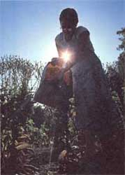 Harvest lettuce stalks with a bag to keep from losing their seeds. |
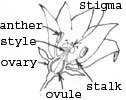 Fig. 1 Flower Parts |
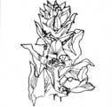 Fig. 2 Spinach flowers |
|
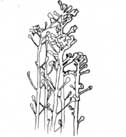 Fig. 3 Broccoli flowers |
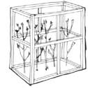 Fig. 4 Caging |
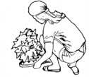 Kent Whealy with a rare White Cushaw. |
|
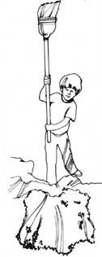 Fig. 6 Threshing |
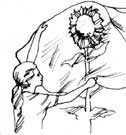 Fig. 7 Protecting sunflower seeds |
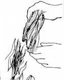 Fig. 8 Pollinating corn |
|
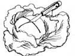 Fig. 9 Freeing cabbage's seedstalk |
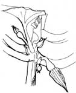 Fig. 10 Unopened female squash flower |
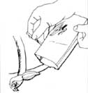 Fig. 11 Bagging the blossom |
|
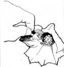 Fig. 12 Fertilizing the female flower. |
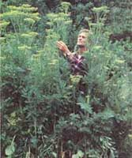 Overwintered parsnips will bolt late the next spring and produce loads of seed by July. |
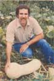 |
|
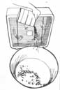 Fig. 13 Winnowing seeds |
|
|